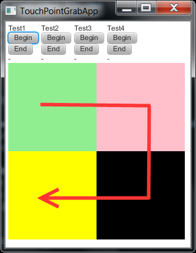

Touch Point Grab API Test
Prerequisites: Installed FX runtime, multitouch hardware support
- Uninstalled all previous version of FX sdk & runtime;
- Installed FX runtime
- Please see SceneGraphTests/README-mutitouch.html file to get
basic knowledges about multitouch.
Test workflow:
- This test is applicable only for touch screen. In other case press "Passed"
- Take a look at the test application (TouchPointGrabApp)
- There are three columns with labels "Test1", "Test2", "Test1" &
buttons "Begin" / "End" for each column
- Push the button "Begin" in the "Test1" column
- Do Scroll gestures on the green rectangle
- Push the button "End" in the "Test1" column
- In case label below the button "End" in the first column is "Test1 failed"
- test failed
- Push the button "Begin" in the "Test2" column
- Do Scroll gestures on the green rectangle
- Push the button "End" in the "Test2" column
- In case label below the button "End" in the second column is "Test2 failed"
- test failed
- Push the button "Begin" in the "Test3" column
- Do Scroll gestures on the green rectangle
- Push the button "End" in the "Test3" column
- In case label below the button "End" in the third column is "Test3 failed"
- test failed
- Push the button "Begin" in the "Test4" column
- Do Scroll gestures from the green rectangle, over pink & black
rectangle to yellow rectangle. And and gesture on the yellow rectangle.
The route of scroll gesture must be like as the red line on the figure below:

- Push the button "End" in the "Test4" column
- In case label below the button "End" in the fourth column is "Test4 failed"
- test failed
- In case of successful verification press pass, otherwise fail